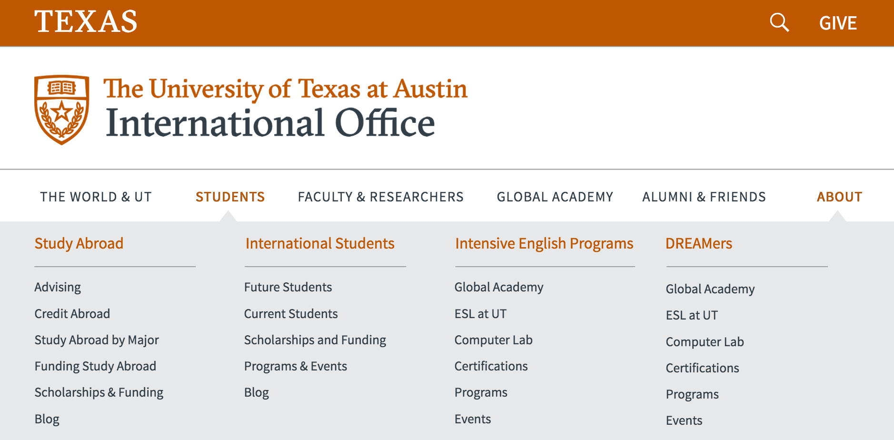
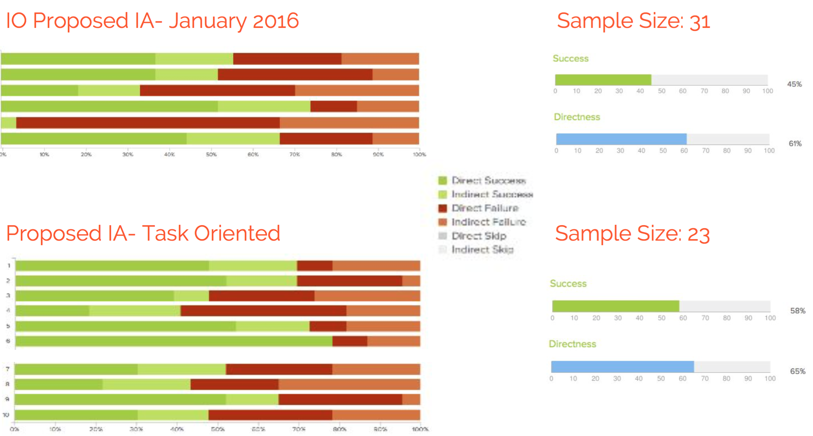

Peishan Xu is a web designer, UX designer and learning experience designer. She holds a master degree in Learning Technologies from University of Texas at Austin and also a Bachelor of Science in Education Technology from Shenzhen University, China.Peishan has more than two-year experience for projects in K-12 education, universities and industries.
Peishan proficiently master web design essentials including html5, css3 and JavaScript,important programming languages like Java, responsive visual design skills including Adobe Suite, experience creating sitemaps, wireframes and prototypes. Based on the practical projects Peishan's working, she is focusing on UX and UI trend by emphasizing the process.
Alien Rescue project is an online problem-based 3D immersive learning environment for sixth grade science. It combines best practices from educational research with innovative technologies to deliver an engaging learning experience.
The design of Alien Rescue is based on current research in teaching and learning and is continually developed by researchers from The University of Texas at Austin.
My Role
As a learning experience design, my role includes:
1. Led 3D developing team in converting and adapting 3D models to WebGL
2. Redesigned the game learning environment to meet the sixth grade science curriculum requirement using Modo and Blender (version transformation)
3. User tested before launching the game in the classroom (Git and Github)
4. Provided strategies and standard for styling the game.
5. Collected user data and feedbacks on Alien Rescue older versions
6. Created and developed the official website of Alien Rescue project
7. Documented collaboration and research workflow
8. Product Management
Problems, Solutions & Iterations
1. The project encountered the gap between the trends that Google Chrome just killed the Unity Web Player and nearly 70% of the users use Chrome according to Google Analytics, so our Alien Rescue team was doing a lot of research on what support can be adopted for our Unity 3D game engine.After comparing the advantages and disadvantages between three candidate 3D modeling tools(Modo, Blender and Three.js), we decided Blender was the most preferable tool and also compatible with Blend4Web - interactive 3D visualization on the Internet.
2. The version 5.1 only had restrictied budget and seven－month time limit for design and production from September 2015. As a group leader, how to get the new members familiarized with the 3D working cycle efficiently is my main concern. In that case, the strategies for training the new members include week-by-week group meeting and tutorial sessions. As the 3D group leader, I'm creating mockups for proposing blueprints in the Alien Rescue game environment by referring to the last version. Every time we agree on the proposed 3D-related objects, tasks will be assigned to corresponding team member so they can practise while learning from the suggested tutorials and be required to report in the next group meeting every week.
3. How to optimize collaboration in our project team is very important. It is difficult for different members to work on the same file or to wait until other members to finish their parts. So we decided to use git and github to solve the collaboration problems via version control. It turnt out that documenting the collaborating process is essential because git and github are first introduced in our group and will be used for the following product management and development
The redesign of StudentUniverse.com will help users seamlessly plan their trips andpurchase airline tickets, as well as reduce stress while traveling. The features of the redesign will be implemented through the Web site interface. The goal of the redesign is to create a pleasant, stress-free experience for international students concerning the tasks of trip planning, searching for tickets and prices, and finding helpful information.
The process of signing up for the site will be improved because the current site requires
too much personal information too soon. The redesign will make it easier for the user to sign up and benefit from the site features. Requiring users to provide personal information too soon
can be viewed as a nuisance and even an invasion of privacy.
The interface where users input search parameters for flights has been streamlined and simplified. When searching for flights, users can take advantage of interactive features that will allow them filter and sort results in a more efficient manner. The results pages also includes some information display features that simplify the interface.
The new site feature, Travel Assistant, will allow users to manage their upcoming flights,
rate past flights, and get important information about destinations and airports. Users will also be able to set up convenient notifications so friends and family can be alerted by email or textmessage of users’ travel status.
After the trip, users can submit ratings of the airlines on which they traveled. The new
rating system will allow users to rate the overall experience of the flight on a scale of one out of five stars. The rating system will assist other users in making the best decisions for their travel plans as average ratings will be displayed in search results next to airlines. Users who rate their flights will receive benefits such as points or mileage.
Dynamic real-time loading of search results
New features for flight booking wrapped up with a travel assistent metaphor
Our goal is to design an app that will help the barrel brewer better manage his warehouse by enabling him to quickly access information about each barrel. The app will simplify the barrel managing process and improve working efficiency. Our starting idea is to design an app based on existing barrel-management software. The app will allow the brewer to identify suchattributes as a barrel’s wood, manufacturer, previous contents, beer, and associated tasting notes by scanning a QR code on the barrel. The brewer will also be able to edit a barrel’s information with the app. And perhaps the app will have some kind of sorting feature to allow the brewer to pull up, say, a list of the barrels containing beer that will be ready on a certain date, or all of the oak barrels.
Because the adoption of barrel programs in breweries is a relatively recent trend, much of the software used to manage the programs has been recycled from software used to manage
barrels in wineries. We want to make something specific to breweries with a straightforward, well-defined purpose. It’s possible that the nature and scope of our project will change after we’ve interviewed the brewers and identified their biggest pain points, but our main goal is that the app be widely usable, easily customized and well designed.
This project is to publicize and bring more attention to an immersive 3D learning game---Salamander Rescue. We intend to create an introductory website about the content, key design features, and instruction for potential Salamander Rescue users and relevant stakeholders to explore the area revealed in this attractive Salamander Rescue world.
Consulting and Advising workload is much more burdensome than previously. Most likely, the users will have to be present in the International Office because they might get lost when trying to get useful information from the IO website. International Office decided to redesign the official website because they realize that many trendy UX strategies have been proved to booster the services and greatly improve their user experience.
The current/old website for International Office was graded unsatisfactorily using Google Analytics and also by professional evaluators. Our target users are students, faculty and scholars, so we conducted contextual inquiry on these users by primarily sending out questionnaires from different departments and inviting users to our interviews. After analyzing the user data and creating user personas for specific target group, we decided to ditch some important changes into our new design:
Mega menu

Responsive Design for mobile devices(iPhone and tablet etc.)
Social Media Optimization
Information/Website Architecture played a significant role in our redesign project.
Audience-oriented vs Task-oriented Architecture

Audience-oriented architecture was proved to increase success and directedness using tree testing tool. In other words, users can self-identify themselves in the website and find out the services.
The purpose of this project is to evaluate the usability of the website builders by comparing two market- leading tools , which are Wix(www.wix.com) and Weebly(www.weebly.com). There is a growing need for amateurs to design their own website. Website Builders offer users a convenient way to create personalized websites by providing well-designed templates. The specific goals of the test include:
Evaluate the efficiency of providing solutions (e.g.templates) which fit in with theuser needs(i.e. Building a personalized website)
List significant features that facilitate users’ web designing process
Make suggestions for the two website builders to improve their usability. The usability testing will evaluate the two websites using seven preferred scenarios among eight randomly selected users at the University of Texas at Austin. Users are skilled at computers but have little knowledge about web design or coding. They have never used website builders to create websites before. The evaluation includes a pre-test, post-task and post-test while data are collected and analyzed in terms of task completion, user satisfaction and the number of errors
Issues and evaluation of the current Craigslist website:
For the current website, Craigslist is very much like the sections in the newspaper with a bunch of titles and labels. This very basic design has also become a major part of Craigslist’s branding, and it helps to make the website memorable and instantly recognizable. However, the ultra-basic and oversimplistic design consists of primarily texts and hyperlinks all with the same styling. Although it shares the similar characteristics with minimalist design, it requires large cognitive load for users to navigate and find their information efficiently. Craigslist’s design is hardly considered beautiful, even by those who appreciate websites that consist primarily of text.
Content-User-Context framework
A prospective information architecture should be rooted in the content-user-context framework. The website seems widely open to all the different kinds of target audiences because each section of the website is aligned ‘close’ to each other and Craigslist doesn’t distinguish different sections by their unique content information. Furthermore, the common context for users to enter the website is that they usually will search Craigslist on Google.com and then the result showing on the top of the list is the Craigslist website nearest your location after filtering by the IP address. However, the issue is, users feel reluctantly no difference at the first glance they enter the website when they go to ‘Craigslist Austin’ and ‘Craigslist Los Angeles’, for example. There’s no identifiable visual representation in the website to instantly tell which ‘child website’ of Craigslist users are interacting with. The only symbol for users to recognize ‘where they actually are’ is the title in the center of the top. The most embarrassing situation for users is they bring their needs and problems to Craigslist but find it difficult and complex to start.
User Audiences
As mentioned in the Content-User-Context framework section, the website intends to solve the problems of all kinds of user audiences who have needs and issues by providing site-wide information(e.g. life resources, career-related database, discussion forums). People who come to Craigslist usually will bring with some goals and tentative blueprints of the information wanted. However, the detailed description of each sub-domains seems in vain without sufficient role identification. For example, in the housing section, the role of the target audience can be divided into housing-wanted group and housing-for-sale group. Unfortunately, the user audience identity isn’t highlighted in the Craigslist system because the poor organization of the content and information.
Labeling System
For labeling system, it is a form of visual representation to convey concepts and ideas in the information architecture. A typical labeling system shows it importance in navigation. An efficient navigation system requires labels to be ‘specific’ in the context of the website. For the labeling system of Craigslist, the informative labels are aligned in the ‘canvas’ of the website by category while the main features and company-related information is scattered over the left and bottom side of the website. It makes a hard time for users to distinguish the information identity especially for those users who are the newcomers in the website. Also the labeling systems often contains abbreviation for different terminology. For example, the right side bar of the website indicates the links to the Craigslist of the other locations nearby. However, it takes time for users to find information for the potential ‘sibling’ of the website they are looking at. For instance, users who have flexibility in looking for a rental apartment in Texas, will find the labeling for locations very tricky. ‘East Texas’ and ‘Houston’ sound like similar description but at different hierarchical levels. Users, at this point, might get stuck in the dead end about whether they should begin their search in ‘East Texas’ or just ‘Houston’. Also, there’s no shortcut for them to filter the information but to browse the items one by one. Many labels are found to be repetitive and conflict with each other. For example, users might not know whether they should start searching in ‘apts/housing’ or ‘housing swap’, as the former one looks like the generic and parent source of the latter. In the meanwhile, some concepts overlap and break the rule of consistency and integrity. In ‘rooms/ shared’ and ‘rooms/ wanted’, there are several questions popping up as users might assume: Does ‘rooms’ indicate ‘apartments’ or ‘house’? Why should a slash lie between ‘rooms’ and ‘shared’ considering the common sense that slash mostly refers to ‘or’?
Navigation System
For navigation system, Craigslist doesn’t have a very traditionalized layout with global and local navigations. The most obvious navigations occur in the layout of content and contextual navigation. For starters and even experts in Craigslist, there is no navigation menu that appears consistently throughout the website, even though Craigslist is really a network of smaller websites held on sub-domains of Craigslist.org. However, poor organization of the categorized content makes it hard for users to navigate. As it appeared in the labelling issues, users might be unwillingly ‘forced’ to hit the ‘Back’ button in their browser to go to another section of the website. The explanation accounting for this phenomenon is that they have to traverse various sub-domains of the sections they are interested in even they bring the clear visions and goals to Craigslist.
Colors
The current design of Craigslist applies very little color. In fact, in addition to the default colors like blue and black for hyperlinks and text, there is no other colors responsive to the context, content and structure of the website. Colors often reflect the structure and relationships within information organization. The blue color of the texts is really one of the distinguishing marks of the website demonstrated with the effects of visited links in purple and hovered links also in purple with an underline. The entire website with almost the same color impaired some diversity of the categorized domains and increased the difficulty to keep the website identity intact.
Layout
Craigslist’s layout is table-based. The consistent table of each domain section facilitates users to identify the nine blocks of Craigslist template and their sub-domains. Aside from the content section in the middle of the screen, there are also ‘Craigslist-related’ features (e.g. About Craigslist, Search bar, Event calendar and FAQ ) and other connections (language and networks of other locations in Craigslist), on the left side and right side bar respectively. The current website doesn’t have much of a header. The header can convey the information of the website about where user are, what the website is used for and how users can start from doing. The left and right side bar consists of unorganized sidebar links which makes users suffer a lot from the order of a large number of texts. And Craigslist currently has no clear-cut footer. Moreover, the ‘log in’ and ‘register’ feature is only held by the invisible link of account, which is not persuasive at all for the users to have a try in Craigslist, only until they have to.However, the design of Craigslist is not friendly to customize the width and height of the screen. In other words, there is no responsive design embedded for the layout of the website. When users resize, and specifically minimize the screen of the browser, the content will gradually disappear. For the browser, there is a one-click switch for users to experience both the desktop versions and mobile versions of Craigslist. Nevertheless, the intention for the switch from desktop to mobile is a bit blurring especially in the browser view. There’s no symbolic icons to outline the layout of the website clearly.
Accessibility
Craigslist basically has a top-down information architecture. The structure of the content recognizable with clarity of vision and purpose. There are two useful tools to help users access the information effectively, which are search bar and event indicator. Users can use the search bar to look up their keywords and the result will be filtered by categories. Categorized results with a calculated number will be showed as well for users to click into the specific sections. Event calendar provides a way for users to narrow down the scope of the dates when the updated posts available are contributed. However, users might feel uncomfortable about accessing the information with plain texts and links on the secondary pages. Huge amounts of screen space are left completely empty with very few navigational options.


{kind=link}